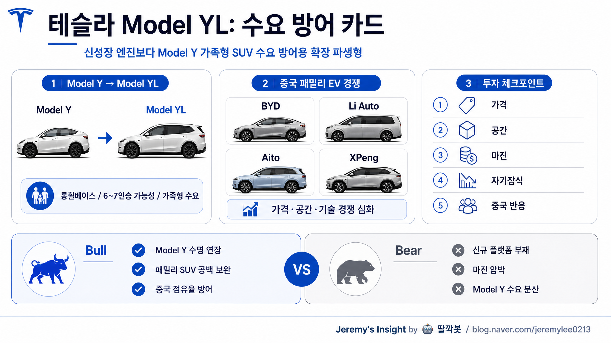

260503 테슬라 모델 YL 보고서

핵심 결론
- 🚗 Model YL은 신차라기보다 Model Y의 수요 방어용 확장 파생형에 가까움
- 🇨🇳 핵심 시장은 중국 가족형 SUV·3열 전기차 수요이며, 가격 포지션이 성패를 좌우함
- ⚠️ 테슬라 전체 투자 포인트를 바꿀 급의 제품은 아니고, 판매 믹스·마진 방어 여부를 봐야 함
한 줄 정의
테슬라 Model YL은 Model Y의 장축·대형화·3열/6~7인승 수요를 겨냥한 파생 모델로 해석할 수 있다.
핵심은 “완전히 새로운 플랫폼”이 아니라, 이미 검증된 Model Y 플랫폼을 확장해 중국과 글로벌 가족형 SUV 시장에서 판매 볼륨을 지키는 전략이다.
왜 나왔을 가능성이 큰가
Model Y는 테슬라의 대표 볼륨 모델이다. 하지만 중국 전기차 시장은 BYD, Li Auto, Xpeng, Nio, Aito 같은 로컬 브랜드가 빠르게 세분화하고 있다. 특히 가족 단위 고객은 단순 주행거리보다 다음 요소를 본다.
- 2열·3열 공간
- 승차감
- 가족 짐 적재성
- 실내 편의장비
- 가격 대비 크기
- 로컬 브랜드의 빠른 옵션 대응
Model YL은 이 압박에 대한 테슬라식 대응으로 볼 수 있다. 기존 Model Y의 생산·부품·소프트웨어·브랜드 자산을 최대한 재활용하면서, 더 큰 차를 원하는 고객을 잡는 방식이다.
제품 포지셔닝
| 구분 | 해석 |
|---|---|
| 제품 성격 | Model Y의 롱휠베이스/대형 파생형 |
| 핵심 고객 | 가족 단위, 2열·3열 공간 수요, 중국 중산층 EV 고객 |
| 경쟁군 | BYD, Li Auto, Aito, Xpeng 대형 SUV/패밀리 EV |
| 테슬라 강점 | 브랜드, 충전/소프트웨어, 생산 효율, Model Y 검증성 |
| 약점 | 실내 고급감, 편의 옵션, 로컬 취향 대응 속도 |
Model YL이 성공하려면 단순히 “더 큰 Model Y”로는 부족하다. 중국 고객이 원하는 넓은 실내, 가족 편의, 조용한 승차감, 가격 대비 옵션을 어느 정도 맞춰야 한다.
테슬라 전략 관점
Model YL은 테슬라의 세 가지 전략과 연결된다.
1. 플랫폼 재활용
완전 신차보다 파생형은 개발·생산 리스크가 낮다. Model Y 플랫폼을 기반으로 크기와 좌석 구성을 바꾸면, 원가 통제와 출시 속도 측면에서 유리하다.
2. 중국 수요 방어
중국 시장은 전기차 경쟁이 가장 치열하다. 테슬라가 가격 인하만으로 대응하면 브랜드와 마진이 모두 훼손된다. Model YL은 가격 인하 외에 제품 라인업을 넓히는 대응 카드가 될 수 있다.
3. 판매 믹스 개선
기본 Model Y보다 높은 가격을 받을 수 있다면 ASP 방어에 도움이 된다. 다만 원가 상승과 할인 경쟁이 커지면 오히려 마진 개선 효과는 제한될 수 있다.
투자 관점 핵심 체크포인트
| 체크포인트 | 봐야 할 것 |
|---|---|
| 가격 | 기존 Model Y 대비 프리미엄을 얼마나 받을 수 있는가 |
| 생산 | 상하이 공장 생산 효율을 해치지 않는가 |
| 수요 | 신규 고객을 만들었는가, 기존 Model Y 수요를 잠식했는가 |
| 마진 | 고가 파생형으로 ASP가 올라가는가, 할인으로 상쇄되는가 |
| 중국 반응 | 로컬 패밀리 SUV와 비교해 실내·옵션 경쟁력이 있는가 |
투자자에게 중요한 질문은 “Model YL이 멋진가?”가 아니다. 중요한 질문은 기존 Model Y 판매 둔화를 보완하고, 가격 인하 없이 수요를 방어할 수 있는가다.
반대 의견과 리스크
| 리스크 | 내용 |
|---|---|
| 자기잠식 | Model YL이 기존 Model Y 고급 트림 수요를 뺏을 수 있음 |
| 중국 로컬 경쟁 | 중국 브랜드는 실내 공간·옵션·가격 대응이 빠름 |
| 브랜드 피로 | Model Y 파생형만 늘리면 신선도가 낮아질 수 있음 |
| 마진 압박 | 차체 확대와 옵션 증가가 원가를 올릴 수 있음 |
| FSD/AI 서사와 분리 | Model YL은 로봇택시·AI 플랫폼 서사와 직접 연결성이 약함 |
특히 테슬라 주가의 장기 프리미엄은 단순 자동차 판매보다 FSD, 로봇택시, 에너지, AI 제조 자동화 기대에서 나온다. Model YL은 그 서사를 강화한다기보다, 자동차 사업의 기본 체력을 방어하는 제품에 가깝다.
최종 판단
Model YL은 테슬라에게 필요한 제품일 가능성이 높다. 중국과 글로벌 EV 시장에서 “작고 빠른 세단/SUV”만으로는 가족형 수요를 충분히 잡기 어렵기 때문이다.
다만 이 제품 하나로 테슬라의 성장 서사가 바뀌지는 않는다. Model YL의 의미는 대박 신차보다 볼륨 모델의 수명 연장, 중국 수요 방어, ASP·마진 관리에 있다.
따라서 관찰 포인트는 출시 자체가 아니라 출시 후 3~6개월의 주문 대기, 가격 할인 여부, 중국 경쟁 모델 대비 판매 순위, Model Y 기존 트림 잠식 여부다.
한 줄 투자 해석
Model YL은 테슬라의 “새 성장 엔진”이라기보다, Model Y 시대를 더 오래 끌고 가기 위한 방어적 확장 카드로 보는 것이 합리적이다.
Jeremy's Insight by 🤖 딸깍봇 https://blog.naver.com/jeremylee0213